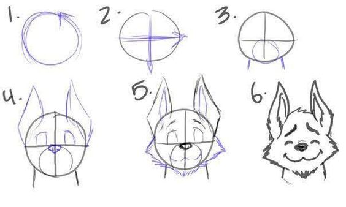
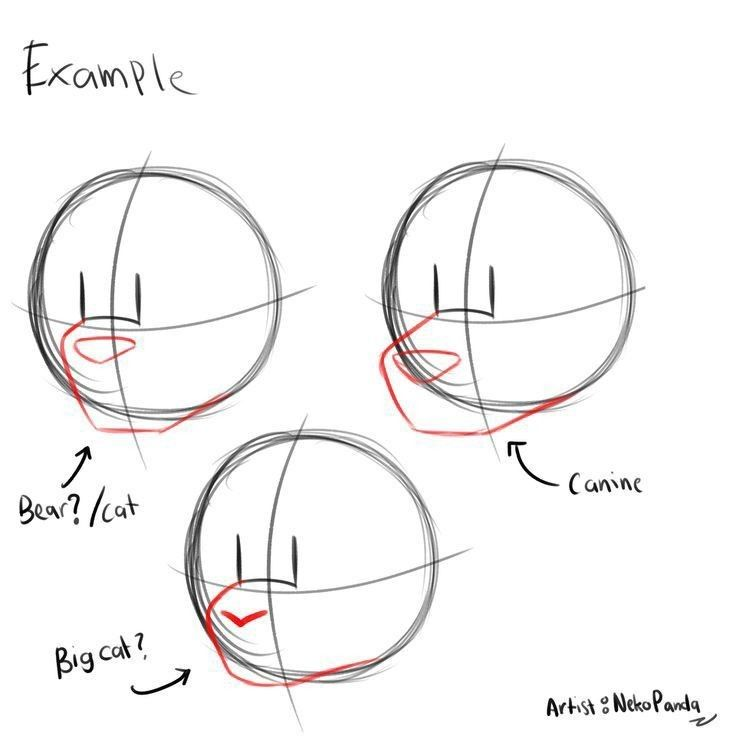
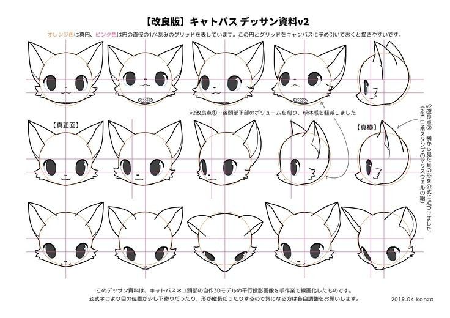
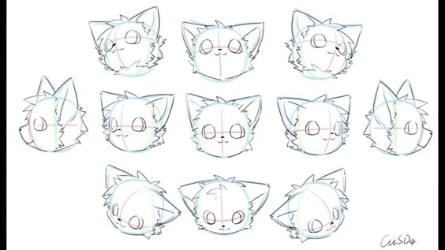
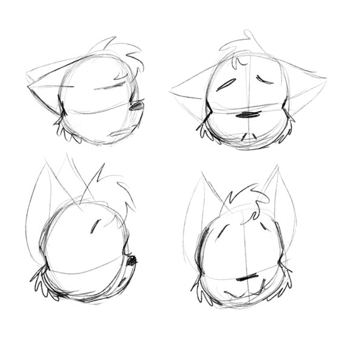

Descrição da Seção
Nesta seção você treinara perspectiva e seu traço na hora de desenhar cabeças de furrys.
Exemplos
Desenhe todos os desenhos dos exemplos para treinar.
- 
- 
- 
- 
- 
* Para desenhar cabeças de furries, comece com um esboço básico em forma de oval, que servirá como base. Defina a linha central vertical e horizontal para posicionar os olhos, que geralmente são grandes e expressivos, características marcantes dos furries. Lembre-se de que a perspectiva pode alterar a forma da cabeça; em ângulos de baixo para cima, a parte inferior do queixo pode parecer mais pronunciada, enquanto em ângulos superiores, a testa pode parecer mais ampla.